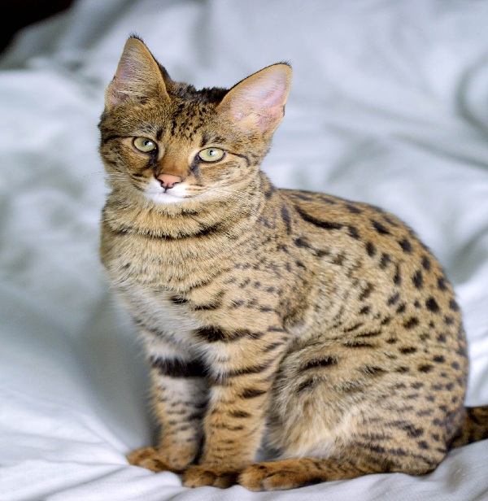

Life of a Savannah Cat

The Savannah cat is a unique and exotic breed, known for its striking appearance, long legs, and playful personality. This breed is a hybrid, created by crossing a domestic cat with a serval, a wild African cat. Savannah cats are intelligent, curious, and highly active, often enjoying interactive play and mental stimulation. They have a distinctive spotted coat, large ears, and a graceful, athletic build. Despite their wild appearance, they can be loving companions. Their energetic nature and inquisitive behavior make them stand out from other domestic cats. They need space to explore, regular playtime, and attention from their owners.